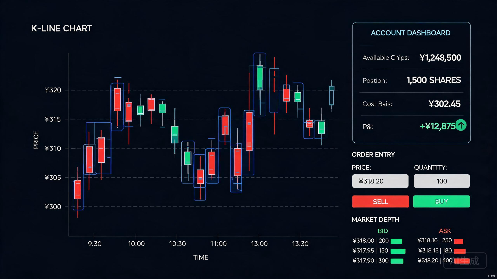

玩家扮演机构交易员，在K线图上绘制目标走势，机器根据K线方向自动下单（画高买入、画低卖出），所有订单在证券交易所撮合。纯仿真市场，无AI预测。可用筹码清零则日内无法操作。未完成领导设定的年化收益率KPI即被开除。
这是一款纯仿真市场的交易模拟游戏，没有关卡设计，没有AI价格预测，核心是一个连续的交易日循环。玩家扮演机构交易员，领导设定了年化收益率KPI目标——完不成就被开除，游戏直接结束。
核心交互极简：玩家在K线图上画线，机器根据K线方向自动下单。画高就下买单（推动价格上涨），画低就下卖单（推动价格下跌）。所有订单发送到证券交易所的撮合引擎完成成交，与散户和其他主力的订单在同一订单簿中竞争。玩家的可用筹码（现金）是有限资源——买入消耗筹码，卖出回收筹码（需要先有持仓）。可用筹码清零则当日无法再下买单，只能眼睁睁看着市场波动。
市场是完全仿真的：大量散户代理根据价格变化做出追涨杀跌、止损、抄底等真实反应，其他主力代理有独立的操盘意图。没有任何AI预测价格走向——价格完全由订单簿中的供需关系决定。玩家面临的挑战是：在有限的筹码下管理买卖节奏，既要推动K线向期望方向走，又要在过程中低买高卖积累收益，最终达成年化收益率KPI。
flowchart TD
subgraph Day["交易日循环"]
A["开盘·观察市场状态"] --> B["绘制K线走势
画高=目标上涨 画低=目标下跌"]
B --> C{"机器下单逻辑"}
C -->|"画高 → 买单"| D1["发送买单至交易所"]
C -->|"画低 → 卖单"| D2["发送卖单至交易所"]
C -->|"可用筹码=0"| D3["无法下买单
日内停止操作"]
D1 --> E["交易所撮合
限价订单簿·价格时间优先"]
D2 --> E
E --> F["散户·主力并行反应"]
F --> G["更新K线·成交量·账户"]
G --> H{"日内交易时间结束?"}
H -->|否| A
H -->|是| I["日终结算"]
end
I --> J{"年化收益率 ≥ KPI目标?"}
J -->|是| K["继续下一交易日"]
J -->|否| L["被开除
游戏结束"]
每个交易日从开盘到收盘是一个完整循环。玩家在交易时间内反复"画线→机器下单→市场反应→更新账户"。日内可用筹码耗尽则无法再下买单，只能等待卖出机会回收筹码。日终结算时检查年化收益率是否达到KPI目标，不达标即游戏结束。这种设计让每个交易日都有紧迫感——筹码管理失误可能导致整周收益归零。
没有AI预测价格走向。所有价格变动完全由订单簿中的买卖订单撮合产生。散户、主力、做市商的行为都是独立的交易决策，不是预设脚本。市场走向不可预测，只能通过自己的订单去影响。
可用筹码是核心资源约束。画高需要买入消耗筹码，画低需要卖出回收筹码（需先有持仓）。筹码清零则日内无法操作。玩家必须在"推动价格"和"保留弹药"之间做取舍。
没有评分系统，取而代之的是领导设定的年化收益率KPI。达不成就被开除——这是唯一的游戏结束条件。KPI目标随时间推进逐步提高，玩家必须持续超额收益才能生存。
所有订单走证券交易所撮合，价格优先时间优先。五档盘口、成交明细、涨跌停限制一应俱全。UI对标主流证券交易软件，让玩家有真正在操盘的沉浸感。

选择 C# + .NET 8 作为核心开发语言和运行时。本项目的核心技术挑战是大规模并行仿真——需要同时运行数百上千个交易者代理，每个代理独立维护账户状态并做出交易决策。C#的ThreadPool和Parallel API、System.Threading.Channels无锁管道、以及.NET 8对Span<T>和栈分配的优化，为高并发仿真提供了坚实基础。相比C++，C#的开发效率显著更高，而GC暂停可以通过对象池化和分代调优控制在可接受范围内。
| 候选方案 | 优势 | 劣势 | 结论 |
|---|---|---|---|
| C# / .NET 8 | 类型安全、并行生态成熟（ThreadPool/Channels/Span）、跨平台、AOT支持 | GC暂停（可通过池化缓解） | 采用 |
| C++ / Qt | 极致性能、精细内存控制、无GC | 开发效率低、内存安全风险、并发原语繁琐 | 不采用 |
| Rust / Tauri | 内存安全、零成本抽象、无GC | UI生态不成熟、学习曲线陡峭、金融图表库匮乏 | 不采用 |
选择 Avalonia UI 11 作为桌面应用框架，配合 SkiaSharp 进行K线图的高性能自绘渲染。Avalonia原生支持MVVM模式，渲染管线基于Skia，与SkiaSharp无缝集成，同时覆盖Windows/macOS/Linux三平台。K线图需要支持实时更新、目标K线叠加、交互式绘制等功能，采用SkiaSharp从零自绘获得完全的渲染控制权。
| 组件 | 选型 | 用途 |
|---|---|---|
| 应用框架 | Avalonia UI 11 | 桌面UI、MVVM、跨平台 |
| 图表渲染 | SkiaSharp | K线图自绘、成交量图、技术指标 |
| 并行仿真 | System.Threading.Channels | 无锁管道、线程间订单/价格传递 |
| 任务并行 | Parallel.ForEach + ThreadPool | 批量代理评估、并行撮合 |
| 对象池 | System.Buffers.ArrayPool<T> | 订单/成交记录池化、减少GC |
| DI容器 | Microsoft.Extensions.DI | 依赖注入、模块解耦 |
| 日志 | Serilog | 结构化日志、调试与回放分析 |
| 数据持久化 | SQLite + Dapper | 游戏存档、配置、交易日历史 |
| 单元测试 | xUnit + Moq | 撮合引擎与代理逻辑测试 |
市场仿真引擎采用Agent-based建模方案，自研而非使用现成库。核心原因是游戏需要同时仿真大量交易者（数百到上千个散户代理 + 多个主力代理 + 做市商），每个代理独立维护账户状态、评估市场并下单。这对并行处理能力的要求极高——不是简单的多线程，而是需要在每个时间步内并行评估所有代理、批量收集订单、串行撮合、并行反馈结果的流水线。
撮合引擎实现标准的连续限价订单簿（CLOB），价格优先、时间优先。撮合本身是串行的（订单簿的全局一致性要求），但代理评估和结果反馈可以完全并行化。仿真引擎运行在独立线程组，通过Channel<T>无锁管道与UI线程通信。
整体采用五层架构：表现层、游戏逻辑层、仿真引擎层、订单映射引擎和数据层。与前一版本的关键区别是：取消了AI控制层（无价格预测），替换为轻量的订单映射引擎——只做K线方向到订单方向的简单映射；取消了评分系统，替换为KPI考核系统。仿真引擎层是整个系统的性能瓶颈点，采用并行流水线架构。
flowchart TB
subgraph PL["表现层 Presentation"]
UI["Avalonia UI
MVVM ViewModels"]
Chart["SkiaSharp
K线图控件"]
Panel["交易面板
五档盘口·委托区·KPI仪表盘"]
end
subgraph GL["游戏逻辑层 Game Logic"]
State["游戏状态管理"]
KPI["KPI考核系统
年化收益率目标·开除判定"]
Day["交易日推进"]
end
subgraph OM["订单映射引擎 Order Mapping"]
Mapper["K线→订单方向映射
画高→买 画低→卖"]
Chip["筹码检查
可用筹码>0方可下买单"]
end
subgraph SE["仿真引擎层 Simulation (并行)"]
Match["交易所撮合引擎
限价订单簿·串行"]
Agents["投资者代理池 (并行)
散户·主力·做市商"]
Sent["情绪系统"]
end
subgraph DL["数据层 Data"]
Save["存档系统"]
Cfg["配置管理"]
end
UI --> State
Chart --> State
State --> Mapper
Mapper --> Chip
Chip -->|"通过"| Match
Chip -->|"筹码=0"| Block["拒绝买单
日内无法操作"]
Agents -->|"并行下单"| Match
Sent --> Agents
Match -->|"串行撮合"| Price["价格·成交更新"]
Price --> State
Price -->|"并行反馈"| Agents
State --> Save
Cfg --> KPI
Day --> KPI
系统采用生产者-消费者并行模型，核心是三个通过Channel<T>连接的线程组：
| 线程组 | 职责 | 并行度 | 通信方式 |
|---|---|---|---|
| UI线程 | 界面渲染、用户交互、K线绘制 | 1 | 数据绑定接收更新 |
| 订单映射线程 | K线方向→订单方向、筹码检查 | 1 | Channel输出订单 |
| 代理评估线程池 | 并行评估所有散户/主力代理 | N (ThreadPool) | Channel收集订单 |
| 撮合线程 | 订单簿撮合（必须串行） | 1 | Channel输入订单、输出成交 |
| 反馈线程池 | 并行将成交结果分发回各代理 | N (ThreadPool) | Channel输入成交 |
玩家在UI线程绘制K线 → 订单映射线程将K线方向转为买/卖订单并检查筹码 → 订单通过Channel投递到撮合线程 → 同时，代理评估线程池并行评估所有散户/主力代理，生成的订单也投递到撮合线程 → 撮合线程串行处理所有订单，生成成交记录 → 成交记录通过Channel分发到反馈线程池，并行更新各代理账户 → 价格更新回传UI线程刷新图表和面板。每个时间步的流水线延迟目标控制在16ms以内。
TradingSimulator/
├── TradingSimulator.UI/ # Avalonia UI 项目（表现层）
│ ├── ViewModels/ # MVVM ViewModel
│ ├── Views/ # XAML 视图
│ └── Controls/ # 自定义K线图控件
│
├── TradingSimulator.Core/ # 游戏逻辑层
│ ├── GameState.cs # 游戏状态
│ ├── KPISystem.cs # KPI考核系统（年化收益率·开除判定）
│ └── TradingDay.cs # 交易日推进
│
├── TradingSimulator.Simulation/ # 仿真引擎层（并行）
│ ├── Exchange/ # 证券交易所
│ │ ├── OrderBook.cs # 限价订单簿
│ │ └── MatchingEngine.cs # 撮合引擎（串行）
│ ├── Agents/ # 投资者代理池（并行评估）
│ │ ├── IInvestorAgent.cs # 代理接口
│ │ ├── RetailAgents/ # 散户代理（6种类型）
│ │ └── InstitutionalAgents/ # 机构代理（主力·做市商）
│ ├── ParallelScheduler.cs # 并行调度器（流水线编排）
│ └── SentimentSystem.cs # 情绪系统
│
├── TradingSimulator.OrderMapping/ # 订单映射引擎
│ ├── KLineToOrderMapper.cs # K线→订单方向映射
│ └── ChipChecker.cs # 筹码检查
│
├── TradingSimulator.Data/ # 数据层
│ ├── SaveSystem.cs # 存档
│ └── ConfigManager.cs # 配置
│
└── TradingSimulator.Tests/ # 单元测试玩家在K线图右侧的"未来区域"绘制期望的K线走势。系统支持逐根手绘和模板快速生成两种模式。逐根模式下，玩家通过鼠标拖拽设定每根K线的最高价和最低价，系统自动推算合理的开盘价（前一根收盘价）和收盘价（拖拽终点）。模板模式提供常见K线形态（如头肩顶、双底、上升三角形等），玩家选择后自动填充目标序列。
public class TargetKLineSeries
{
public string Symbol { get; set; }
public TimeFrame Timeframe { get; set; } // 1m, 5m, 15m, 30m, 1h, 1d
public List<TargetCandle> Candles { get; set; }
public DateTime CreatedAt { get; set; }
}
public class TargetCandle
{
public int Index { get; set; } // 序列中的位置
public decimal Open { get; set; } // 目标开盘价
public decimal High { get; set; } // 目标最高价
public decimal Low { get; set; } // 目标最低价
public decimal Close { get; set; } // 目标收盘价（最关键）
public OrderDirection ImpliedDirection // 推导出的订单方向
{
get => Close > Open ? OrderDirection.Buy : OrderDirection.Sell;
}
}目标K线的核心信息是方向：收盘价高于开盘价（阳线）→ 机器下买单推动上涨；收盘价低于开盘价（阴线）→ 机器下卖单推动下跌。K线的形态细节（上下影线长度、实体比例等）影响订单的拆分节奏和下单量级，但不改变买卖方向。
订单映射引擎是连接玩家意图和市场执行的桥梁，逻辑极简：画高→买单，画低→卖单，筹码=0→拒绝买单。不涉及任何价格预测或策略优化——机器只做方向映射和执行，市场走向完全由订单簿中的供需关系决定。
public class KLineToOrderMapper
{
private readonly TradingAccount _account;
///
/// 将玩家绘制的目标K线转化为订单序列
///
public List<Order> MapToOrders(TargetKLineSeries target, decimal currentPrice)
{
var orders = new List<Order>();
foreach (var candle in target.Candles)
{
var direction = candle.ImpliedDirection;
if (direction == OrderDirection.Buy)
{
// 画高 → 买单：检查可用筹码
if (_account.Cash <= 0)
{
// 筹码清零，日内无法下买单
break;
}
var orderVolume = CalculateOrderVolume(candle, currentPrice, _account.Cash);
orders.Add(new Order
{
Direction = OrderDirection.Buy,
Type = OrderType.Limit,
Price = candle.Close, // 限价买单挂在目标价
Volume = orderVolume,
Symbol = target.Symbol
});
}
else
{
// 画低 → 卖单：检查持仓
if (_account.Position <= 0)
{
// 无持仓可卖，跳过
continue;
}
var sellVolume = Math.Min(
CalculateOrderVolume(candle, currentPrice, _account.Position * currentPrice),
_account.Position
);
orders.Add(new Order
{
Direction = OrderDirection.Sell,
Type = OrderType.Limit,
Price = candle.Close, // 限价卖单挂在目标价
Volume = sellVolume,
Symbol = target.Symbol
});
}
}
return orders;
}
// 根据K线幅度和可用资金计算下单量
private decimal CalculateOrderVolume(TargetCandle candle, decimal currentPrice, decimal available)
{
var priceChangeRatio = Math.Abs((candle.Close - currentPrice) / currentPrice);
// 幅度越大，下单量越大（但有上限防止筹码瞬间耗尽）
var maxVolume = available * 0.2m / currentPrice; // 单笔最多用20%可用资金
var targetVolume = available * priceChangeRatio * 2m / currentPrice;
return Math.Min(targetVolume, maxVolume);
}
}订单映射的关键设计点是筹码约束。买单会消耗可用筹码（现金），卖单需要先有持仓。当可用筹码清零时，机器无法再下买单，玩家画高的指令无法执行——日内只能等待价格回落触发持仓止损卖出回收筹码，或者等待下一个交易日。这个约束让筹码管理成为核心策略维度：不能一味画高买入，必须在合适时机画低卖出回收筹码，否则会在关键时刻"弹尽粮绝"。
玩家的订单与散户、主力的订单进入同一个交易所撮合引擎。买单需要排队等待卖单匹配，卖单需要排队等待买单匹配。大额买单可能部分成交、部分挂单。玩家无法保证订单立即成交——如果市场上没有足够的对手盘，即使筹码充足也无法推动价格。这确保了市场的真实阻力感。
仿真引擎是游戏的"物理世界"，也是性能优化的核心战场。它维护一个限价订单簿（交易所），所有参与者（玩家机器、散户代理、其他主力代理、做市商）的订单统一进入撮合。引擎按时间序列逐笔处理订单，生成成交记录和价格更新。每根K线周期结束后，系统汇总该周期内的所有成交，生成OHLC数据。
flowchart TB
subgraph Parallel["并行评估阶段 (ThreadPool)"]
direction LR
PA["玩家订单
来自映射引擎"]
RA["散户代理池
200-1000个·并行评估"]
IA["主力代理
3-5个·独立决策"]
MA["做市商
持续双边报价"]
end
PA --> Collect["订单收集器
Channel<Order>"]
RA --> Collect
IA --> Collect
MA --> Collect
Collect -->|"批量投递"| Match["交易所撮合引擎
串行·价格优先时间优先"]
Match --> Results["成交结果
Channel<Trade>"]
subgraph Feedback["并行反馈阶段 (ThreadPool)"]
direction LR
PF["更新玩家账户"]
RF["更新散户账户·状态"]
IF["更新主力账户·状态"]
MF["更新做市商报价"]
end
Results --> PF
Results --> RF
Results --> IF
Results --> MF
PF --> UI["UI刷新
K线·盘口·账户面板"]
每个时间步（如1秒）的仿真分为三个阶段：并行评估所有代理生成订单 → 串行撮合所有订单 → 并行反馈成交结果更新各代理状态。串行撮合是不可避免的——订单簿的全局一致性要求同一时刻只有一个线程修改。但评估和反馈阶段可以完全并行化，这两个阶段占据了大部分计算量。
public class ParallelScheduler
{
private readonly MatchingEngine _engine;
private readonly List<IInvestorAgent> _agents;
private readonly Channel<Order> _orderChannel;
private readonly Channel<List<Trade>> _tradeChannel;
///
/// 执行一个时间步的仿真流水线
///
public async Task TickAsync(MarketSnapshot snapshot)
{
// 阶段1：并行评估所有代理，生成订单
var orders = new ConcurrentBag<Order>();
await Parallel.ForEachAsync(_agents, async (agent, ct) =>
{
var agentOrders = agent.Evaluate(snapshot);
foreach (var o in agentOrders)
orders.Add(o);
});
// 阶段2：串行撮合（订单簿一致性要求）
var trades = new List<Trade>();
foreach (var order in orders.OrderBy(o => o.Timestamp))
{
var matches = _engine.Match(order);
trades.AddRange(matches);
}
// 阶段3：并行反馈成交结果，更新各代理账户
var tradesByAgent = trades.GroupBy(t => t.BuyerId)
.Concat(trades.GroupBy(t => t.SellerId));
await Parallel.ForEachAsync(tradesByAgent, async (group, ct) =>
{
var agent = _agents.First(a => a.Id == group.Key);
agent.UpdateAccount(group.ToList());
});
}
}散户代理是市场流动性的主要来源，也是玩家控盘时的主要"对手盘"。每种类型的散户有不同的行为触发条件和参数。代理数量根据标的流动性动态配置，小盘股200个左右，大盘股可达1000个以上——代理数量是性能压力的主要来源。
| 类型 | 行为特征 | 触发条件 | 关键参数 |
|---|---|---|---|
| 追涨型 | 价格上涨时跟进买入 | 涨幅超过感知阈值（1%-3%） | 感知阈值、跟风强度、资金量 |
| 杀跌型 | 价格下跌时恐慌卖出 | 跌幅超过感知阈值（1%-3%） | 感知阈值、恐慌系数、持仓量 |
| 抄底型 | 大幅下跌时逆向买入 | 跌幅超过大阈值（5%-8%） | 抄底阈值、仓位控制、耐心值 |
| 止损型 | 持仓亏损达到阈值时卖出 | 持仓亏损 > 止损线（-5% ~ -10%） | 止损线、持仓周期、决心值 |
| 跟风型 | 跟随成交量异常放大方向交易 | 成交量 > 均量 × 2 | 成交量倍数阈值、方向判断窗口 |
| 价值型 | 价格低于估值时买入，高于估值时卖出 | 价格偏离估值 ±10% | 估值模型、偏离阈值、仓位上限 |
每个散户代理维护独立的持仓状态、资金余额和心理状态。代理的行为不仅受价格触发，还受全局情绪系统影响。情绪系统维护一个-100到+100的市场情绪指数（恐惧-贪婪），当情绪极度恐惧时，杀跌型和止损型代理的触发阈值降低；当情绪极度贪婪时，追涨型代理更活跃。情绪指数随价格走势、成交量和市场事件动态变化。
其他主力代理拥有独立的操控目标和策略，行为模式参考真实市场中的庄家手法：建仓（低位悄悄吸筹）→ 拉升（配合消息面推高价格）→ 出货（高位分批抛售）。不同性格的主力在操作节奏和隐蔽性上各有差异：
账户系统实时追踪玩家的资金和持仓状态，所有数据在面板上实时展示。系统模拟A股交易规则，包括T+1制度、涨跌停限制（10%或20%）、最小交易单位（100股）和交易成本（印花税0.05% + 佣金万2.5）。
public class TradingAccount
{
// 核心状态
public decimal Cash { get; set; } // 可用现金（筹码）
public decimal Position { get; set; } // 持仓数量（股）
public decimal AvgCost { get; set; } // 持仓均价
public decimal FrozenCash { get; set; } // 冻结资金（买单占用）
public decimal FrozenPosition { get; set; } // 冻结持仓（卖单占用）
// 衍生指标（实时计算）
public decimal TotalAssets(decimal currentPrice) =>
Cash + Position * currentPrice;
public decimal UnrealizedPnL(decimal currentPrice) =>
(currentPrice - AvgCost) * Position;
public decimal RealizedPnL { get; set; } // 累计已实现盈亏
public decimal ReturnRate(decimal initialCapital, decimal currentPrice) =>
(TotalAssets(currentPrice) - initialCapital) / initialCapital;
// 筹码检查：买单前检查可用筹码
public bool CanBuy(decimal requiredAmount)
{
return Cash - FrozenCash >= requiredAmount;
}
// 交易成本计算
public decimal CalculateCost(decimal amount, bool isSell)
{
var commission = amount * 0.00025m; // 佣金万2.5
commission = Math.Max(commission, 5m); // 最低5元
var stampDuty = isSell ? amount * 0.0005m : 0; // 印花税（仅卖出）
return commission + stampDuty;
}
}面板上实时显示的核心指标包括：可用筹码（当前可投入的资金，清零则日内无法下买单）、持仓筹码（持有的股票数量）、持仓成本（加权平均买入价）、浮动盈亏（未平仓部分的盈亏）、已实现盈亏（已平仓部分的累计盈亏）和年化收益率（KPI考核的核心指标）。
KPI系统取代了传统的评分系统，是游戏唯一的失败条件。领导设定年化收益率目标，未完成即被开除。这种设计将压力感贯穿整个游戏体验——不是某关没过可以重来，而是持续性的生存压力。
public class KPISystem
{
private readonly decimal _initialCapital; // 初始资金
private DateTime _startDate; // 考核起始日期
private decimal _annualTarget; // 年化收益率目标
///
/// 计算当前年化收益率
///
public decimal CalculateAnnualizedReturn(decimal currentAssets, DateTime now)
{
var totalReturn = (currentAssets - _initialCapital) / _initialCapital;
var elapsedDays = (now - _startDate).TotalDays;
var annualized = totalReturn * (365m / (decimal)elapsedDays);
return annualized;
}
///
/// 日终KPI检查
///
public KPICheckResult DailyCheck(decimal currentAssets, DateTime now)
{
var annualizedReturn = CalculateAnnualizedReturn(currentAssets, now);
var isFired = annualizedReturn < _annualTarget;
return new KPICheckResult
{
CurrentReturn = annualizedReturn,
Target = _annualTarget,
Gap = annualizedReturn - _annualTarget,
IsFired = isFired,
DaysRemaining = (int)(_startDate.AddYears(1) - now).TotalDays
};
}
}
public record KPICheckResult
{
public decimal CurrentReturn { get; init; } // 当前年化收益率
public decimal Target { get; init; } // KPI目标
public decimal Gap { get; init; } // 差距（正=达标，负=未达标）
public bool IsFired { get; init; } // 是否被开除
public int DaysRemaining { get; init; } // 距考核截止剩余天数
}KPI目标随时间动态调整：游戏初期目标较低（如年化10%），随着交易日推进逐步提高（如年化30%、50%），模拟领导不断提高要求的真实职场压力。日终结算时面板醒目显示当前年化收益率与目标的差距，以及距离下次考核的剩余天数。当年化收益率持续低于目标时，玩家面临被开除的风险——这是游戏唯一的Game Over条件。
界面布局对标主流证券交易软件，分为四个主要区域：
K线图主体，显示实际K线（红涨绿跌）和玩家绘制的目标K线（蓝色半透明叠加）。下方附成交量副图。支持MA、MACD、KDJ等技术指标叠加。大单买卖点在图上标注。
实时显示可用筹码、持仓数量、持仓成本、浮动盈亏、已实现盈亏。KPI仪表盘显示年化收益率、目标值、差距和剩余天数。筹码清零时醒目红色警告。
五档买卖盘实时刷新，显示各价位挂单量。下方为机器自动委托的实时展示区，玩家可看到机器根据K线方向下出的买单/卖单及其成交状态。
成交明细滚动显示，显示每笔成交的价格、数量、方向。状态栏显示当前交易日、时间进度和KPI完成度。
整个项目分为五个阶段，预计22周完成。采用MVP优先策略：先实现最小可玩闭环（能画K线、机器能下单、能看到盈亏和KPI），再逐步丰富市场仿真和并行优化能力，最后打磨体验并发布。由于取消了AI价格预测和关卡设计，整体周期比前一版本缩短4周。
这是整个项目最大的技术挑战。仿真引擎需要同时运行200-1000个散户代理和若干机构代理，每个代理在每个时间步内都要评估市场状态、做出交易决策、维护独立账户。同时UI需要60fps刷新K线图和面板数据。代理数量是性能压力的主要来源——1000个代理意味着每个时间步要并行评估1000个对象、收集数百个订单、串行撮合、再并行反馈结果。
应对策略是三管齐下：并行流水线——代理评估和结果反馈用Parallel.ForEachAsync并行处理，只有撮合引擎串行运行；对象池化——订单、成交记录、市场快照等高频分配的对象使用ArrayPool<T>池化，避免GC压力；数据布局优化——代理的持仓、资金等热数据使用struct而非class，以值类型存储在连续内存中，提高CPU缓存命中率。目标性能指标：1000个代理 × 1秒K线周期，单步仿真耗时 < 8ms。
如果散户行为不够真实，游戏就失去了策略深度——玩家随便买卖就能推动价格，没有市场阻力。但纯仿真市场没有AI预测，价格完全由订单簿供需决定，这意味着市场走向确实不可控。关键在于找到"可影响但有阻力"的平衡点。
应对策略是参数化所有散户行为，并通过配置统一调控。散户的感知阈值、资金量、情绪敏感度都可以调整。参数校准参考真实A股的换手率、涨跌幅分布和散户交易行为研究数据。市场事件系统（利好/利空新闻）注入额外的不确定性，让市场不会过于规律。
筹码是核心资源约束，其平衡性直接影响游戏体验。初始筹码太多则毫无压力，太少则开局就弹尽粮绝。单笔下单上限太低则画线效果不明显，太高则筹码瞬间耗尽。KPI目标太高则不可能完成，太低则毫无挑战。
应对策略是将所有平衡参数集中到配置文件中，在P4阶段进行大量playtest。关键指标包括：平均存活天数（被开除前的交易日数）、筹码清零频率、KPI达标率。根据数据迭代调整初始筹码量、单笔上限、KPI目标曲线和散户参数。同时设计动态KPI调整——如果系统检测到玩家连续多日无法达标，适当降低下阶段KPI目标，避免死局。
K线图需要同时支持历史K线渲染、实时K线更新、目标K线叠加显示、交互式绘制（鼠标拖拽创建目标K线）、多时间周期切换、技术指标叠加等功能。这些需求远超通用图表库的能力。
应对策略：使用SkiaSharp完全自绘K线图控件。将渲染分为背景层（网格、坐标轴）、主图层（K线、成交量、均线）、叠加层（目标K线、大单标注）、交互层（绘制中的K线预览、十字光标）四个独立的渲染层，按需重绘。交互绘制使用命中测试确定鼠标位置对应的K线索引和价格水平，实时生成预览K线。
撮合引擎必须串行运行（订单簿全局一致性），但所有代理的订单通过Channel并发投递。需要确保订单的时间戳排序公平、撮合逻辑无竞态条件、成交结果不丢失。
应对策略：撮合引擎运行在独占线程，通过Channel<Order>接收订单（Channel本身是线程安全的）。订单进入时打上单调递增的时间戳，撮合按时间戳排序。成交结果通过Channel<Trade>输出，反馈线程池并行消费。整个流水线无锁——线程间通信完全通过Channel，不使用lock语句。
| 风险项 | 概率 | 影响 | 缓解措施 |
|---|---|---|---|
| 大规模并行性能不足 1000个代理导致单步仿真超时 |
高 | 高 | 并行流水线架构、对象池化、struct值类型优化缓存命中、必要时降级到500个代理 |
| 市场仿真不够真实 散户行为机械化、可预测 |
中 | 高 | 参考真实A股数据校准参数，为每个代理引入随机性因子，市场事件系统注入不确定性 |
| 筹码平衡性失调 初始筹码/KPI目标/下单上限配比不当 |
中 | 中 | P4阶段大量playtest，记录存活天数和达标率数据，迭代调整配置参数 |
| 开发周期超期 并行仿真引擎复杂度超预期 |
中 | 中 | MVP优先策略，P2交付最小可玩版本后即可获取反馈，P3代理数量可先200后扩展 |
| 撮合引擎并发问题 Channel死锁或成交丢失 |
低 | 高 | 撮合引擎独占线程、Channel无锁通信、完善的单元测试覆盖撮合边界条件 |
| UI复杂度超预期 交易软件级UI开发量大 |
中 | 中 | Avalonia MVVM组件化开发，优先核心面板（K线图+账户+KPI），次要功能后置 |
项目的关键路径是 P1基础架构 → P2核心玩法 → P3市场仿真。这三个阶段构成了游戏的核心价值链。P4（并行优化与打磨）和P5（测试与发布）可以在核心可玩版本基础上推进。如果性能不达标，P3可以先实现200个代理（而非1000个），后续在P4阶段逐步扩展。关键路径上没有任何可选裁剪项——所有阶段都是游戏可玩性的必要组成部分。